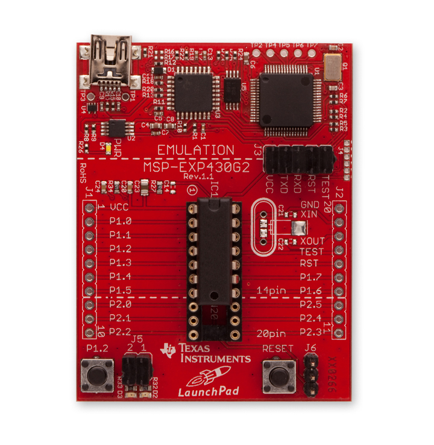
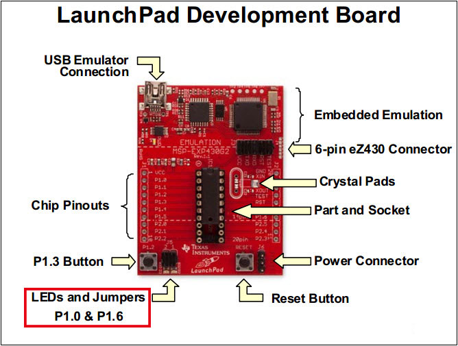

Launchpad MSP430 是德州儀器 TI 所推出的 8-bit 微控器開發版，和知名的 Arduino 相比，Launchpad 價錢相對便宜 (約 NT $300)，並且可以自由更換板子 上面的 IC 進行燒錄。

大部分人進行 MSP430 開發的時候都會使用 TI 或是其他廠商所提供的整合開發 環境(IDE)，比如 CCS、IAR Embedded，這一類工具使用方式與介紹網路上非常 多。對於一個 Emacs 與 Linux 慣用者而言，我傾向於最簡單乾淨的方式，使用 Makefile 和 msp430-gcc 來達成我所期望的 Launchpad 開發。
msp430-gcc 似乎可以在 TI 的網站上找到與下載，如果你也是 Gentoo Linux 用戶，
可以考慮直接使用 crossdev 來幫你建置 msp430 的 toolchain。
使用 crossdev 建立 msp430 編譯環境
我最喜歡 Gentoo Linux 的一點就是他有一套非常強大的 toolchain 建立系統
crossdev, 使用 crossdev，可以很輕鬆的就建立出不同平台需要的 toolchain，
比如說我們想產生 msp430 的 gcc，則只要這樣做:
Rosia msp430 # crossdev -S -s4 -t msp430
若你有需要產生 msp430 用的 gdb，則再執行以下命令
Rosia msp430 # crossdev -S --ex-only --ex-gdb -t msp430
產生完必須的 toolchain 後，我們要安裝開發 msp430 必備的軟體 mspdebug
Rosia msp430 # emerge msgpdebug
mspdebug 初步使用
mspdebug 是 Anusha Beer 所提供的 opensource 作品，可以透過 libusb 直接與 TI 以及其他 3rd party 廠商的燒錄除錯工具配合。其本身的使用方式非常簡單，以下 是基本的 mspdebug 使用方式。
1. 連結到 MSP430 晶片
coldnew@Rosia ~/Workspace/msp430 $ mspdebug rf2500
你會看到如下的資訊 (節錄)
Available commands: = erase isearch power save_raw simio alias exit load prog set step break fill load_raw read setbreak sym cgraph gdb md regs setwatch verify delbreak help mw reset setwatch_r verify_raw dis hexout opt run setwatch_w Available options: color gdb_loop enable_bsl_access gdbc_xfer_size enable_locked_flash_access iradix fet_block_size quiet gdb_default_port Type "help <topic>" for more information. Use the "opt" command ("help opt") to set options. Press Ctrl+D to quit. (mspdebug)2. 燒錄你製作好的 binary 檔案
假如說你已經編譯好你的 MSP430 程式並取名為
main.elf，則這樣燒錄(mspdebug) prog main.elf
3. 執行你的程式
要讓 Launchpad 真的執行你的程式，你可以使用
quit來離開 mspdebug， 或是使用(mspdebug) run
來讓 Launchpad 直接執行你的程式
4. 清空整顆 IC
若有需要將 IC 內部的程式清除，則使用
erase命令來讓整顆 IC 內的程式 被清空(mspdebug) erase
第一個 Launchpad 程式: 閃爍燈
Launcpad 上面提供了兩個可操作的 LED 讓使用者自行控制，即為下圖中紅框指 向的地方

在這邊我們選擇了 P1.0 作為我們要閃爍用的 LED 燈，並撰寫如下程式。
#include <msp430g2553.h> int main (void) { volatile int i; /* Stop watchdog timer */ WDTCTL = WDTPW | WDTHOLD; /* Setup bit 0 of P1 as output */ P1DIR = 0x01; /* Setup bit 0 of P1 to 0 */ P1OUT = 0x00; /* Loop forever */ while (1) { /* Toggle bit 0 of P1 */ P1OUT ^= 0x01; /* Just delay */ for (i = 0; i < 0x6000; i++) {} } }
程式完成後，我們可以使用以下方式編譯程式，並使用 mspdebug 將他燒到我們 的 Launcpad 中。
coldnew@Rosia ~/Workspace/msp430 $ msp430-gcc main.c -o main.elf
動手寫 Makefile 簡化開發流程
每次要測試、編譯程式碼時都很麻煩，所以我們可以自己寫個 Makefile 來進行 簡化整個流程
OBJECTS = main.o MCU = msp430g2553 CC = msp430-gcc CFLAGS = -Os -Wall -g -mmcu=$(MCU) TARGET = main.elf DRIVER = rf2500 all : $(OBJECTS) $(CC) $(CFLAGS) $(OBJECTS) -o $(TARGET) %.o : %.c $(CC) $(CFLAGS) -c $< erase: mspdebug $(DRIVER) "erase" upload: make mspdebug $(DRIVER) "prog $(TARGET)" size: msp430-size $(TARGET) clean: $(RM) -rf $(OBJECTS) $(TARGET)
使用 Makefile 進行開發
完成 Makefile 後，我們整個開發所需要記住的命令就變成下面這樣了，是不是 簡單多了 ~
編譯程式碼
coldnew@Rosia ~/Workspace/msp430 $ make
清除 MSP430 裡面的程式
coldnew@Rosia ~/Workspace/msp430 $ make erase
更新 MSP430 裡面的程式
coldnew@Rosia ~/Workspace/msp430 $ make upload
查看編譯出來的檔案大小
coldnew@Rosia ~/Workspace/msp430 $ make size
清空編譯出來的檔案
coldnew@Rosia ~/Workspace/msp430 $ make clean